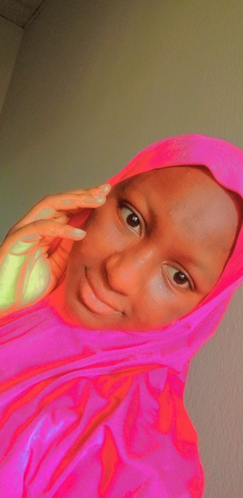

MYSELF

My name is AISHA ARMAYA'U ABUBAKAR.
I was born in our local govement Donga and i am Hausa by tribe.
I grew up in the state capital of Taraba which is Jalingo.
I live together with my family members there; my parents, siblings
and some other relatives.
I started schooling in Al-Bayan before
i later transfered to
Al-Iman right from nursery 1 to SSS 3 in Jalingo.
I graduated from secondary in the year 2020.
After i graduated i
and my younger sister moved to Abuja with some of our family members.
I and my sister were latered admitted into Nile University of Nigeria in
the late year of 2020.
I am in 300 level studying Information
Technolgy there and i am currently my siwes in HIIT.